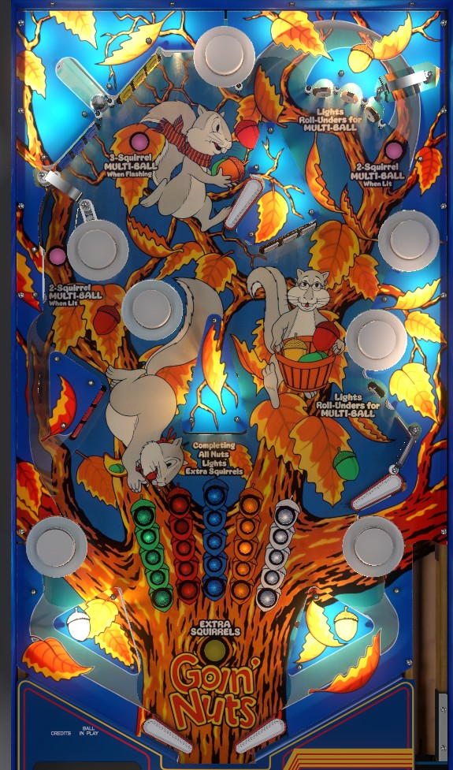

Goin' Nuts is a multiball-only game. Each ball in play starts as 3-ball multiball. Hitting any drop target during multiball adds to the timer. When there is only one ball on the playfield, the timer begins to count down, and if it reaches 0, the flippers are locked and the ball is forced to drain. To re-enter multiball during single ball play, hit the captive ball in the upper left, or hit any white standup target followed by whichever rollunder gate is lit pink.
The below picture of Goin' Nuts' playfield was taken from the VPX recreation by Bord.

Goin' Nuts does not have a plunge button, shooter rod, or anything of the sort. All balls begin as 3-ball multiball, which is plunged automatically. The Timer display on the backglass will count down from 9 before feeding balls to the shooter lane and automatically launching them. Always be ready if it is about to be your turn. Balls are plunged diagonally up-left across the playfield, toward the area with the blue and yellow drop targets, the captive ball, and the top flipper.
Once all three balls are on the playfield, the Timer display on the backglass represents the single-ball timer. It starts at 0 seconds. Hitting any drop target when there are 3 balls in play adds 3 seconds to the timer, and hitting any drop target with 2 balls in play adds 2 seconds to the timer. The timer can hold up to 900 seconds remaining at any given time. If you drain into single-ball play, the timer will begin to count down its seconds. When the timer hits 0, all flippers and bumpers are disabled, allowing the lone remaining ball to drain. There are 2 ways to re-enter multiball if you are down to just one ball in play:
If you restart multiball, the timer will stop counting down, and can continue to be built back up from its current position. If you drain during single-ball play, the turn ends, and you get an additional 1,000 points in end of ball bonus for each second you had left on the timer when you drained.
Drop targets score 10,000 with 3 balls in play, 5,000 with 2 balls in play, and 3,000 with 1 ball in play. The 5 banks of drop targets are green in the dead center, red in the lower left, white in the middle right, and blue and yellow in the top left. Completing any bank of drops lights an insert of that colour in the center of the playfield. Completing a bank 3 times lights that whole column. Completing all 5 columns over the course of the game scores Extra Squirrels, which can award a free game, an extra ball, or 100,000 points. Completion of the columns carries over from ball to ball, unless you completed the whole grid, in which case it will be reset for your next turn.
The captive ball scores 10,000. Standup targets score 3,000. Bumpers score 1,000 regardless of whether they are off, lit, or flashing.
Goin' Nuts has no out lanes. In lanes are C shaped and have no switches within them. Slingshots score 10 points.
Each colour of drop targets that is completed once or twice on the current grid scores 10,000 or 20,000 points in end of ball bonus. Completed columns score 40,000, for a maximum bonus from the grid of 200,000 points. If you drained the last ball from the playfield with time still on the timer, you get 1,000 points per remaining second, which could be up to 900,000 additional points. There is no bonus multiplier or mid-ball bonus collect.